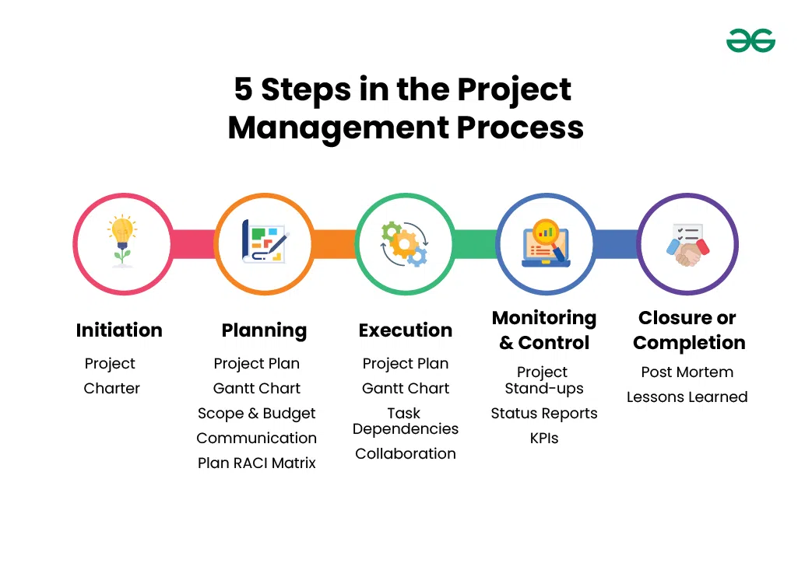

3.4 Software Project Management Complexities
Software project management complexities refer to the various challenges and difficulties involved in managing software development projects. The primary goal of software project management is to guide a team of developers to complete a project successfully within a given timeframe — but this task is quite challenging due to several factors.
Many projects have failed in the past due to poor project management practices. Software projects are often more complex to manage than other types of projects because the product being built is intangible, requirements change frequently, and technical risks are hard to predict early on.
What is software project management complexity?
- Software project management complexity refers to the various difficulties faced while managing a software project, and it can be recognised in many different ways.
- The main goal of SPM is to enable a group of developers to work effectively toward the successful completion of a project in a given time.
- However, software project management is a very difficult task because software is invisible, requirements evolve, and teams must balance schedule, cost, quality, and stakeholder expectations at the same time.

The diagram shows the five phases of project management. Each phase adds its own complexity because poor work in one phase creates problems that surface much later in the project.
- Initiation: Defining wrong goals, missing key stakeholders, or skipping feasibility checks creates problems that are expensive to fix later. A weak start makes the entire project harder to control from the beginning.
- Planning: Estimating cost, duration, and effort is one of the hardest tasks in SPM. An incomplete or unrealistic plan makes every later phase — execution, monitoring, and closure — much more difficult to manage.
- Execution: During development, requirements change, progress is invisible, and technical challenges appear unexpectedly. The manager must keep the team aligned while the actual product is still being built.
- Monitoring and control: Because software progress is hard to see, cost and schedule overruns can go unnoticed until it is too late. Continuous tracking, status reviews, and corrective action are essential but difficult to do accurately.
- Closure: Delivering the product, getting customer acceptance, handing over documentation, and capturing lessons learned are often rushed. Incomplete closure affects maintenance, support, and the success of future projects.
Types of complexity in software project management
The following are the main types of complexity that make software project management difficult:
Management-area complexities
- Time management complexity: It is difficult to estimate the total duration of a project, create a realistic schedule for different activities, and ensure timely completion of every task.
- Cost management complexity: Estimating the total cost of a project is a very difficult task, and the manager must also ensure that the project does not overrun the approved budget.
- Quality management complexity: The quality of the project must satisfy the customer's requirements, and the manager must assure that all stated requirements are fulfilled before delivery.
- Risk management complexity: Risks are unanticipated events that may occur during any phase of the project, and it is difficult to identify all risks in advance and prepare amendment plans to reduce their effects.
- Human resources management complexity: This includes all difficulties regarding organising, managing, and leading the project team, including hiring, motivation, conflict resolution, and performance tracking.
- Communication management complexity: All team members must interact effectively with each other, and there must be good communication with the customer and other stakeholders throughout the project.
- Procurement management complexity: Projects often need services from third parties to complete the task, and acquiring those services on time and within budget adds further complexity.
- Integration management complexity: This covers the difficulties of coordinating all processes and developing a proper project plan. Many changes may occur during development and can hamper project completion, which increases overall complexity.
Technical complexities
- Infrastructure complexity: Computing infrastructure includes networking, load balancers, queues, firewalls, security, monitoring, databases, and scaling. Software engineers focus on delivering business value, but infrastructure is a necessary evil that adds accidental complexity to the project.
- Deployment complexity: A release candidate must be synchronised from one system to another. Conceptually this should be simple, but in practice performing this operation swiftly and securely is very difficult.
- API complexity: An API should ideally be as easy to use as calling a function, but in reality authentication, rate restrictions, retries, error handling, and versioning make API integration far more complicated than expected.
Software-specific complexities
- Invisibility: Until development is complete, software remains invisible. Anything invisible is difficult to manage and control. A project manager cannot directly view progress and can only rely on rough indicators such as completed modules and prepared documents.
- Changeability: Software requirements undergo various changes, and most change requests come from the customer during development. These changes may require redoing work, which increases risks and expenses.
- Interaction: Even moderate-sized software has millions of interacting parts — functions connected through data coupling, serial and concurrent runs, state transitions, control dependency, and file sharing. This inherent complexity creates many development risks.
- Uniqueness: Every software project usually has unique features or situations, unlike building or bridge construction where projects are more predictable. A manager often faces unknown problems that are quite different from past projects.
- Exactness of the solution: A small error can create a huge problem in a software project. The solution must be exact according to its design — for example, function call parameters must match the function definition exactly, which introduces additional risks.
- Team-oriented and intellect-intensive work: Software development is team-oriented and intellect-intensive. Developers must interact, review each other's work, and interface with several team members, which creates coordination complexity.
- Estimation complexity: One of the most important aspects of SPM is estimation. A project manager must estimate cost, duration, and effort based on size estimation during planning, and this task is inherently very complex (see §3.5).
Factors that make project management complex
- Changing requirements: Software projects often involve complex requirements that change throughout development, and the manager must keep the project on track despite these changes.
- Resource constraints: Software projects require developers, designers, and testers, and managing these resources is difficult when skilled personnel or budget is limited.
- Technical challenges: Complex algorithms, database design, and system integration can be difficult to manage and test effectively.
- Schedule constraints: Software projects are often subject to tight deadlines, which makes it difficult to complete all tasks on time without sacrificing quality.
- Quality assurance: Ensuring that software meets required quality standards is critical but complex and time-consuming, especially for large systems.
- Stakeholder management: Projects involve multiple stakeholders — customers, users, and executives — and managing conflicting requirements or expectations is a major challenge.
- Risk management: Software projects face technical, schedule, and resource risks, and managing them effectively requires a structured and continuous approach.
Software project management is a complex and challenging process that requires a skilled and experienced project manager. It involves balancing the conflicting demands of schedule, budget, quality, and stakeholder expectations while ensuring the project delivers the required results.
Advantages of managing complexity in software projects
Although software project management is complex, structured SPM and software engineering practices also bring significant benefits when applied correctly:
- Improved software quality: Software engineering practices help ensure the development of high-quality software that meets user requirements and is reliable, secure, and scalable.
- Better risk management: Practices such as risk identification and mitigation reduce the likelihood of project failure.
- Improved collaboration: Effective communication among team members leads to better outcomes, higher productivity, and better morale.
- Flexibility and adaptability: Software engineering provides a framework for managing changing requirements without losing control of the project.
- Increased efficiency: Structured practices streamline the development process and reduce the time and resources needed to complete a project.
- Improved customer satisfaction: Delivering software that meets requirements on time and within budget improves customer trust and satisfaction.
- Better maintenance and support: Well-designed software is easier to fix, extend, and support over its lifetime.
- Increased scalability: Designing software with scalability in mind ensures it can handle growing user bases and increasing demands over time.
- Higher quality documentation: Thorough documentation throughout development makes software easier to maintain and hand over to other teams.
Disadvantages of software project management complexity
- Increased complexity: The dynamic nature of software development and changing requirements make project management more challenging overall.
- Cost overruns: Software projects can be expensive, and poor budget planning or monitoring leads to cost overruns.
- Schedule delays: Technical challenges, scope creep, and other factors cause schedule delays that impact project success and increase costs.
- Difficulty in accurate estimation: The complexity of software development makes it hard to accurately estimate the time and resources required.
- Dependency on technology: Software projects heavily rely on technology, which can create dependencies and vulnerabilities that negatively impact the project.
- Lack of creativity: Overly structured and formalised approaches can stifle creativity and innovation, leading to fewer new solutions.
- Overemphasis on process: Focusing too much on processes and methodologies can reduce attention on the end product and user needs.
- Resistance to change: Some team members resist changes to established processes, which can impede progress and hinder innovation.
- Mismatch between expectations and reality: Stakeholders may have unrealistic expectations, leading to disappointment when the final product does not meet them.
Q: What are software project management complexities? Discuss the types of complexity, the factors that make SPM difficult, and the advantages and disadvantages of managing software projects.
Model answer points:
- Define SPM complexity as the challenges and difficulties in guiding a development team to complete a software project on time, within budget, and to required quality.
- State that software projects are harder to manage than physical projects because software is intangible and requirements change frequently.
- Types: time, cost, quality, risk, HR, communication, procurement, and integration management complexities; plus technical complexities (infrastructure, deployment, API) and software-specific complexities (invisibility, changeability, interaction, uniqueness, exactness, team-oriented work, estimation).
- Factors: changing requirements, resource constraints, technical challenges, schedule constraints, quality assurance, stakeholder management, and risk management.
- Five PM phases each add complexity — weak initiation/planning creates problems in execution, monitoring, and closure.
- Advantages: better quality, risk management, collaboration, flexibility, efficiency, customer satisfaction, maintainability, scalability, and documentation.
- Disadvantages: increased complexity, cost overruns, schedule delays, estimation difficulty, technology dependency, reduced creativity, process overemphasis, resistance to change, and unrealistic stakeholder expectations.
- Conclude: a skilled manager must balance scope, schedule, budget, and quality while managing stakeholder expectations.